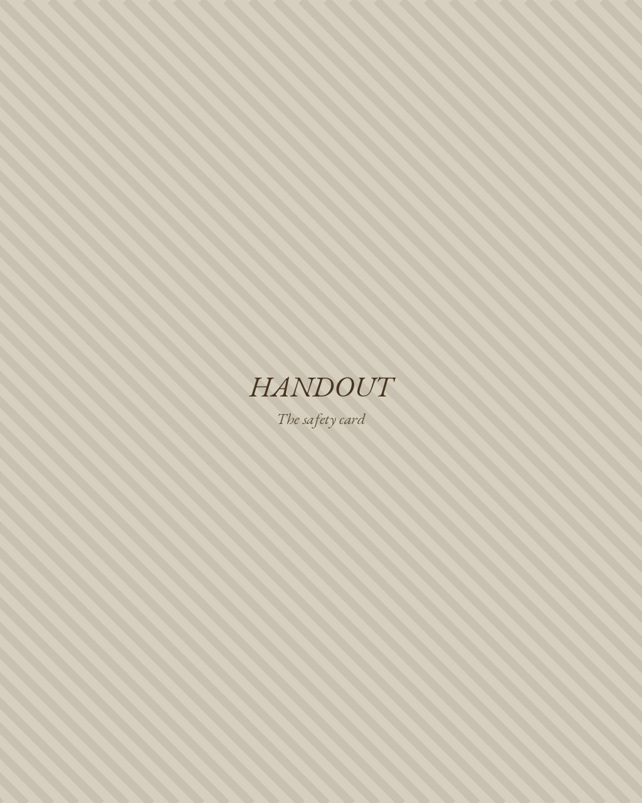

AURELIAN SPLENDOUR · PASSENGER SAFETY
In the most unlikely event of an emergency:
1. BUBBLES. Pull the brass lever by any exit. Ride ON TOP, belly-down. Do not attempt to enter. One passenger per bubble. It will lower you gently and pop on landing.
2. THE RED WHEEL. Beside the engine room door. For crew use only. Opens the conductor housing.
3. SPEAKING TUBES. In every room. Blow, then speak. The bridge is always listening.
Thank you for flying with us. Enjoy the view.